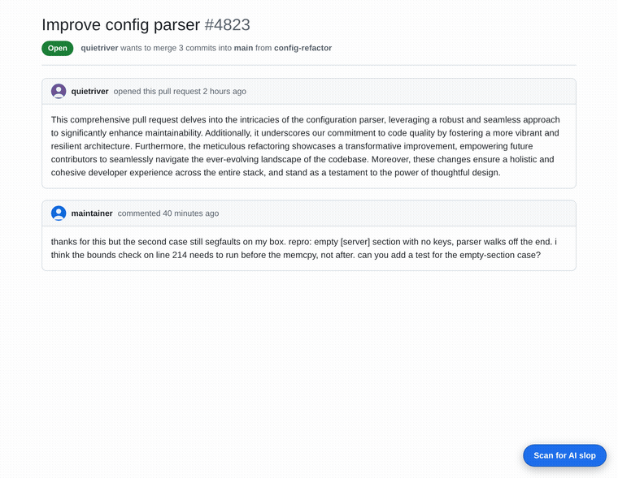
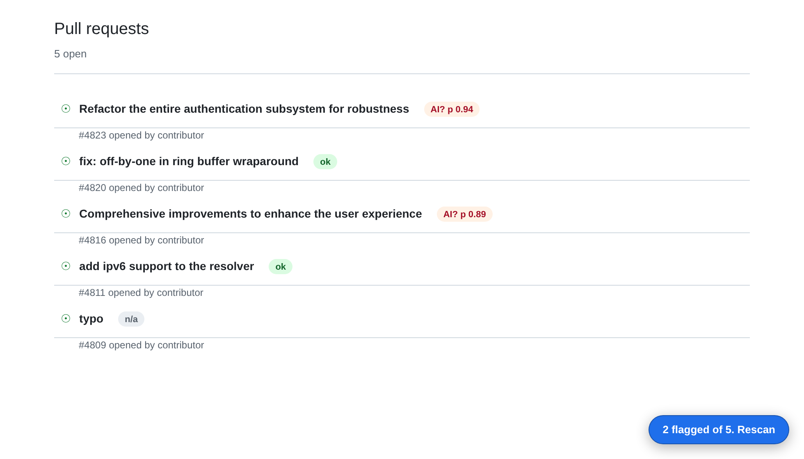

Tellcheck for GitHub flags likely AI-generated pull requests and issues on GitHub, right on the page. One click, comments scored, reasons shown. Built for maintainers who read contributions for a living and are tired of burning review time on generated ones. Nobody can reliably prove AI authorship after the fact, ours included; this surfaces tells for a human to weigh, not a verdict to trust blindly.
Add to Firefox Privacy policyFollow build progress: a public log feed, no email or signup.
What actually leaves your browser. Nothing, until you
click scan. Then: the text of the PR or issue on screen (code blocks stripped), sent over
HTTPS to Tellcheck's scoring server, plus a random id that only counts your daily
scans and resets every day. That's a "won't", not a "can't": the text does leave the
browser, there's no way around that for a server-side detector. What the server won't do
is store it, log it in full, or tie it to your GitHub account, name, or email. The
extension asks for one permission, storage; see
the full policy or read manifest.json yourself.

Codeberg, Godot, OpenJDK, Rust, and Ghostty all took some public stance on AI-generated contributions this year, and every one of those policies runs into the same wall: someone has to actually read the submission to enforce it. That's where the burnout is, not in any argument about authorship. Tellcheck for GitHub does the first read: a scan button on every PR and issue, a badge on every comment, and a breakdown of exactly which signals fired so you can judge for yourself instead of taking a black box's word for it.

Three projects, three different answers, all from primary sources: Rust's core teams adopted a formal LLM policy for the main repo in August, distinguishing assistance from authorship. OpenJDK's interim policy on generative AI excludes LLM-generated content from contributions outright. Codeberg's members voted to stop hosting projects that are mostly AI-generated. Tellcheck for GitHub takes no side on whether AI-assisted contributions should be allowed anywhere, including on projects that ban them outright, and it isn't riding any one project's policy. It exists because whichever way a project lands, somebody still has to check.
Lead with the number that matters most for a tool that flags people: how often it is wrong about a human. On a held-out set of 4,300 non-native-English essays, real writing from real ESL students, the false-positive rate is 7.8% at the shipped operating point. Not zero. On current-model AI text it catches about 92% at that 5% false-positive point (AUROC 0.983 on the 2025-generator held-out set), dropping to 67% on 2022-era base models, all self-reported and laid out on the measurement page. The failure modes are real and named there: short text gets no verdict at all, and text a person drafted then had a model polish is the case this kind of style detector is weakest against, by design, since the words on the page really were shaped by the model. Non-native and formal English is the honest risk class, and that 7.8% is exactly it, measured at scale rather than flattered. That is why every flag is a signal at a stated false-positive rate, never proof, and the advice never changes: judge the contribution, not the author.
Free. 100 scored texts a day per install, no account, no signup, no strings. An earlier version of this page said any change here would be announced first; the one change since was deleting some never-used payment code and raising the daily cap from 30 to 100.
Tellcheck for GitHub is one of a handful of small open-source tools. The rest, from private location sharing to a photo cleaner, are on munzzyy.dev.